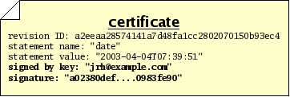

Next: Storage and workflow, Previous: Historical records, Up: Concepts [Contents][Index]
Often, you will wish to make a statement about a revision, such as stating the reason that you made some changes, or stating the time at which you made the changes, or stating that the revision passes a test suite. Statements such as these can be thought of, generally, as a bundle of information with three parts:
For example, if you want to say that a particular revision was composed on April 4, 2003, you might make a statement like this:

In an ideal world, these are all the parts of a statement we would need in order to go about our work. In the real world, however, there are sometimes malicious people who would make false or misleading statements; so we need a way to verify that a particular person made a particular statement about a revision. We therefore will add two more pieces of information to our bundle:
When these 2 items accompany a statement, we call the total bundle of 5 items a certificate, or cert. A cert makes a statement in a secure fashion. The security of the signature in a cert is derived from the RSA cryptography system, the details of which are beyond the scope of this document.

Monotone uses certs extensively. Any “extra” information which needs to be stored, transmitted or retrieved — above and beyond files, manifests, and revisions — is kept in the form of certs. This includes change logs, time and date records, branch membership, authorship, test results, and more. When monotone makes a decision about storing, transmitting, or extracting files, manifests, or revisions, the decision is often based on certs it has seen, and the trustworthiness you assign to those certs.
The RSA cryptography system — and therefore monotone itself — requires that you exchange special “public” numbers with your friends, before they will trust certificates signed by you. These numbers are called public keys. Giving someone your public key does not give them the power to impersonate you, only to verify signatures made by you. Exchanging public keys should be done over a trusted medium, in person, or via a trusted third party. Advanced secure key exchange techniques are beyond the scope of this document.
Next: Storage and workflow, Previous: Historical records, Up: Concepts [Contents][Index]